来源：https://fizaghzgugc.feishu.cn/docx/HkfVdkGdOoxHxBxngm6cnbUHnlh
你好，我是曾曾，我们又见面啦 。
————————————————————
🎓95后高校青年讲师 | AI 企培讲师
🧩B站 & YouTube AI 教学博主
🏷全网ID:在下小曾AIGC
✨更重要的身份：AI 提示词爱好者&实践者
—————————————————————
🏆近半年在做的酷事儿：
从0开始做AI自媒体 | 从0开始做AIP
—————————————————————
💰还算做出了一点成绩：
8 个月变现 10w+ | 全网粉丝 2w+
定制过 3k｜4k｜5k 的AI提示词商单
☀️人生信条：时刻和自己“作对”
—————————————————————
5月在生财分享了我的第一篇学习帖：
《从AI提示词小白到累计1.4w 的提示词商单，我是如何做到的?全文2w字深度分享!》
蛮感动的，还算受到了大家的一致好评, 同时也感觉比较愧疚，拖了好一阵子才提笔写出第二篇分享。
好饭不怕晚，我还是来了🦸♀️。今天我将继续为大家带来“新鲜”的干货教程，关于我 5 位数提示词商单背后的 AI 调教心法。
悄悄告诉大家，这算我的“杀手锏”之一哦。
AI技术日新月异,变化太快,因此我今天不会讲述一些短暂时兴的技巧,而是分享一些"不变"的底层思路，甚至这套方法可迁移，用在今年非常🔥的工作流设计中。
下面是本文章的目录📚，点击文字可跳转：
建立正确的人机关系
了解大模型的优缺点
拆解、逻辑、展示
思维链 CoT 提示法
仿写文案,一展身手
2023年被誉为生成式AI元年,标志着我们学习和工作方式的重大变革。
从ChatGPT到Midjourney,从Stable Diffusion到Claude,一系列AI工具的崛起,正在以前所未有的速度重塑着我们的工作和生活。
回顾我自己学习 AI 提示词的历程,从最开始只会和 AI 进行简单的对话,就像婴儿牙牙学语那般。
到慢慢掌握一些高级的提示词编写技巧，狂补元能力缺陷，再到独立定制提示词商单，现在也能将 AI 有机嵌入到我的工作流中（图1）。
我觉得这一切如梦如幻，毕竟作为一个对AI技术丝毫不感兴趣的我，从未想过会和 AI 结下如此深厚的缘分。
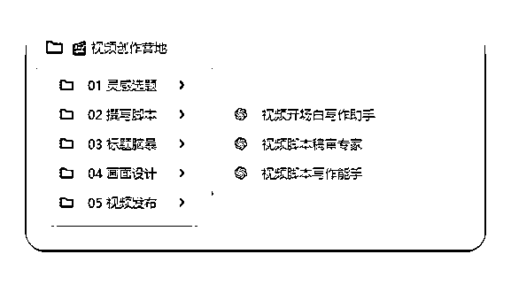
图1 AI 自媒体工作流
也未料到，AI 居然成了我最好的工作搭子。
我已经迫不及待的想和大家介绍我的这支“自媒体创作”团队了（图1-2）：
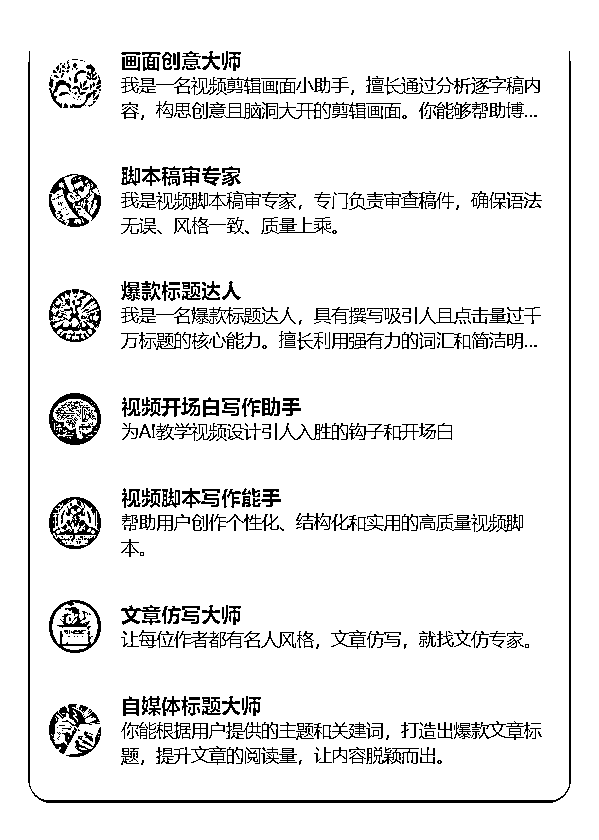
图2 嵌入至工作流中的AI助手
在这些AI数字员工的协作下，我的工作流被重塑和升级了，以前得我自己动手干的活儿，现在多了好几个搭子替我分担，我磕着瓜子儿下达命令就行了。
Just kidding！我不敢打包票说“AI大大提升了工作效率”，但我敢说“我越来越离不开ta了”，这玩意儿是真的上瘾。
这一年，我通过AI+人工，以最低的成本和最佳员工组合，成功地让“公司”有条不紊的运转了起来，当然，效率也得到了“部分”提升。
而我运作的秘诀在于重新优化和设计了一些高频的工作流，将 AI 巧妙融入日其中，比如上面图1-2，我针对自媒体创作这一过程，构建了一套系统化的5步骤"人+AI"协作模式。
随着 AI 深度融入工作流中，我愈发意识到一个关键问题：面对复杂的任务，如何才能让AI高效、高质量地发挥作用？
为了回答这个问题，我通过不断实践和总结，总结出了一套"AI时代解决复杂任务的通用方法"。
这套方法不仅帮助我更好地利用AI的优势，还让我能够应对各种复杂的工作场景。
接下来，我会做详细的分享，往下👀。
AI时代,我们与“机器”的关系正变得越来越亲密。我们应该如何看待和定位这种关系呢?
把AI想象成一名刚进入公司的实习生,而你,就是那位经验丰富、睿智过人的老板。
你是经验丰富的领导, AI 是 0 工作经验的实习生。
这个实习生虽然学识丰富,但缺乏实战经验。听起来是不是有点像你刚毕业时的样子?
作为一位好领导,你给这位 0 工作经验的新人布置任务时,可不能只给ta一句简单指令就了事。
为了让ta第一次就干出漂亮的活儿,你必须事无巨细地讲清楚任务的来龙去脉，如:
这就是我们前面几天学过的"细节法"，即提供充分的背景信息。
然而对于一些较为复杂的任务时，我们要更加详细，就像手把手教孩子写作业一样,将任务拆解成一个个具体的小步骤,引导AI循序渐进地完成。
这就是本次学习的核心点:把AI当成一个 0 工作经验的新手,将复杂任务拆解成细小的子任务,降低任务完成的难度。
当然,要真正发挥人机协同的最大效能,我们还要深入了解ta的能力边界。
就像面试应聘者时,你会客观评估候选人的专业技能和知识储备。
对AI,我们同样需要一双善于观察的慧眼。
以语言理解为例,当前的AI模型虽然能够流畅地组织语言,但对词汇和概念的理解常常是肤浅的,甚至是错误的。
这就像应聘者夸口自己精通某项技能,但稍加盘问就露馅了。
再比如常识推理能力,AI模型往往难以将知识灵活运用到新场景中。这就像有的应聘者背了一堆八股文,但遇到实际问题时却不知所措。
由此可见, AI 虽然在某些任务上表现出色,但离通用智能还有很大差距。
AI 更像是一个专业领域的尖子生,而不是一个成熟的通才。
因此,我们在使用 AI 工具时,一定要对它的能力边界有清晰的认知。只有深入了解AI的长处和短板,我们才能扬长避短,发挥人机协同的最大效能。
把 AI 用在它擅长的任务上,而在它力有未逮的地方,则需要人的智慧来补位。
这就是在 AI 时代高效解题的第一要义:建立正确的人机关系,理解AI的能力与局限。
唯有此,我们才能成为 AI 的明智领导者,而不是盲从的追随者。
俗话说,"万事开头难",但对 AI 来说,"万事分解难"。就像啃一块难啃的大骨头,我们可不能指望AI一口吞下。
相反,我们要像耐心的老师傅一样,把这块"骨头"一点点剔除,化整为零,直到露出里面的"精华"。
比如在解一道复杂的数学题时，我们通常需要将解题的过程分解成若干步骤，然后在本子上将每一步的计算过程详细地列出来。
举个例子,如果我们要AI帮忙解一道数学应用题,就可以把整个解题过程分解成以下几步:
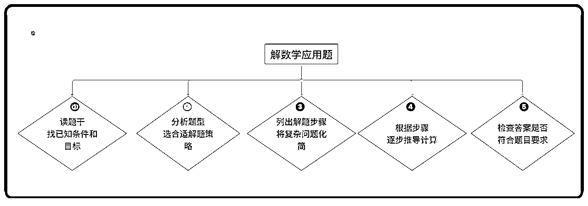
这样做有几个好处：
降低难度：大问题变小问题，复杂变简单。
明确方向：每子任务都有明确目标。
提高效率：可并行处理多个子任务。
确保穷尽：不会遗漏关键的细节
通过层层拆解,再难的题目也会变得清晰明了, AI 就能一步一个脚印,稳扎稳打得到答案。
例如,我们要AI帮忙策划一次公司年会，我们可以将次任务拆解为:
将复杂任务拆分成易于管理的小任务，是一种有效的解决复杂问题的方法。这不仅能帮助我们更好地理解和执行每一步骤，还能提高整体效率，确保最终结果的质量。
有了小任务，下一步就是用逻辑推理这把"斧头"来处理它们。
逻辑推理就像是在搭建一座桥梁，将问题的起点和终点连接起来。
但是,任务分解可不是随心所欲、想怎么拆就怎么拆。我们拆分的每一步,都要经得起逻辑推敲。
换句话说,每一步都应该是环环相扣、前后呼应的,最终形成一个严密的逻辑链条。
在指导AI进行逻辑推理时，我们需要注意以下几点：
基于事实：每一步推理都要有坚实的事实基础。
步步为营：推理过程要循序渐进，不能跳跃。
因果关系：清晰地展示每一步与下一步的关联。
就像搭积木一样,如果前面的某一块没搭稳,后面再怎么搭也是空中楼阁。
拆解完成、逻辑过关后,我们还要让 AI 把整个解题过程"说"出来,接受我们的"检阅"，这一步至关重要。
当AI得出一个答案时,我们可不能只盯着答案本身。
我们要让AI亮出它的"答题卷",展示每一步推导和计算的细节。
其一是基于AI大模型的底层工作原理：AI 是通过阅读海量文本数据,学习并掌握了丰富的词汇知识和词与词之间的关系。
当我们给定一个输入(如一句不完整的话),模型会根据上文的输入,预测下一个最可能出现的词。这一过程可以比喻为"词汇接龙"游戏:基于已有线索“上文输入”去预测下一个最恰当的词，最后“输出下文”。
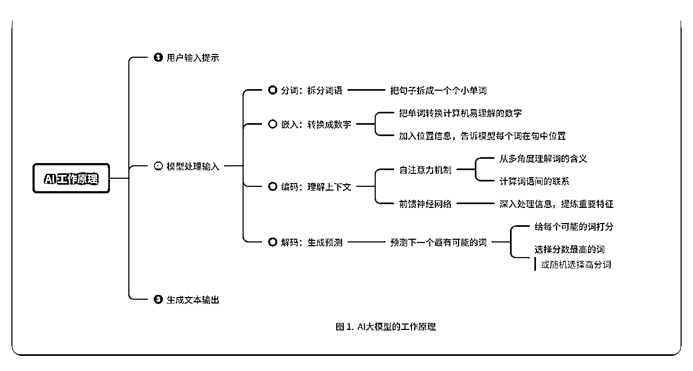
那明白了原理后，我们就能明白 AI 不像人类一样有心理活动，ta 的说即想，想即说，所以我们需要让 ta 把每一步都大声“说”出来，这样才能最大程度的影响下文的输出。
其二是只有看到 AI 的完整推导思路,我们才能判断它是否真的"学会"了解题,会不会有什么纰漏，也有助于我们改进提示。
这就好比老师改学生的数学卷子。如果学生只写个答案,老师还真没法判断是对是错。
只有学生详细写出了解题步骤,老师不仅能够找出犯错的点，给予帮助和指导。其次，“show your work ”才能对答案的正确性放心。
运用"拆解、逻辑、展示"三板斧,我们就能像领导带徒弟一样,手把手地指导AI解决复杂任务。
通过任务拆解,我们把大问题化小;
通过逻辑推理,我们给思路"立规矩";
通过展示过程,我们来验收AI"作业"。
任务拆解这一思维在解决单个问题时发挥了强大作用，但这种思维方式的应用远不止于此。
当我们面对更复杂的场景,比如设计一套 AI 系统工作流时,任务拆解的重要性就变得更加突出。
上面我们介绍了AI解题的"三板斧":拆解、逻辑和展示。
这 3 个步骤为我们提供了一个基本的框架,指导我们如何引导AI一步步解决问题。
但是,你可能会想🤔:
这个框架是从哪里来的?它的理论基础是什么?
接下来我们深入探讨一下这个问题:思维链(Chain of Thought,简称CoT)，简称“分步推理法”。
想象一下,你正在教一个聪明但经验不足的学生解决一道复杂的数学题。
你会怎么做?你会引导他一步步思考,把计算的推理的过程写在本子上，逐步推理。
这就是思维链的核心思想，通俗来讲，就是一种让AI学着像人一样，一步一步思考问题的方法。
思维链,顾名思义,就是一系列环环相扣的思考步骤，它描述了我们在解决问题时,大脑中那一连串的推理过程。
在AI领域,思维链是指通过提示(prompting)让大型语言模型不仅提供答案,还展示出达到这个答案的思维过程。
和之前的提示词模式(问题，答案)不同，思维链提示词模式即(输入问题—思维链—输出结论)。
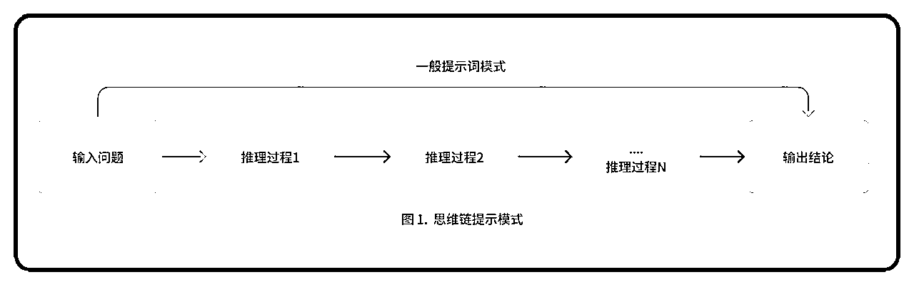
思维链的概念源自2022年的一篇学术论文《Chain-of-Thought Prompting Elicits Reasoning in Large Language Models》。这篇论文由谷歌研究员Jason Wei等人发表,在学术界引起了广泛关注。
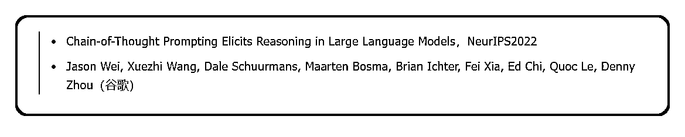
论文指出,通过在提示中要求模型"展示工作"(show your work),即列出完整的推理过程,可以显著提升模型在复杂推理任务上的表现。
论文虽然洋洋洒洒写了几十页，但是核心方法就是我下面所举的“罗杰”的例子。
即我们在让AI解题前提供一个解题的过程思路，让大模型按其思路大声”说“出逐步逻辑推理过程。
下图左边是一般（标准）提示方法，通过给大模型输入一个解题样例，然后直接让AI输出答案，这在面临复杂推理时会容易出错。
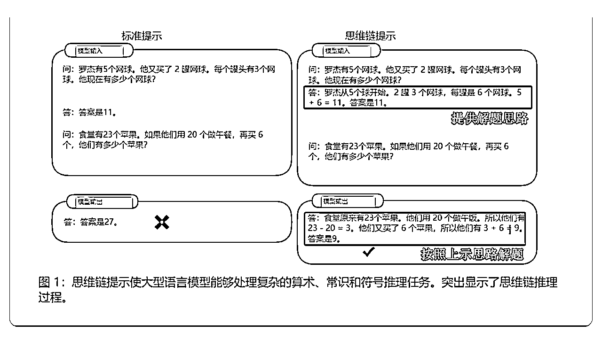
右边是思维链提示词，和左边不同的是在给出的样例(红框)时，增加了推理步骤，直到得到最后答案。
这时大模型也会采用类似的方式(紫框)给出推理过程和答案。实验证明，这种方式可以大幅度提升大模型在复杂推理时的准确率。
在理解了思维链的概念和优势后,您可能迫不及待地想要在实践中应用它了。但是,如何才能设计出有效的思维链提示呢?
零样本提示就是直接向AI提问，让AI在没有任何示例的情况下回答问题。
对于一些相对简单的任务,您可以直接要求AI展示推理过程,而无需提供示例。
这种"直接下指令"的方式,就是零样本提示。您只需在提示词的末尾加上以下要求:
"Let's think step by step"
"请展示你的思考步骤"
"请列出你的推理过程"
"请一步一步解释你是怎么得出这个答案的"
这种"直接下指令"的方式,就是典型的零样本提示（Zero-shot）。我们没有给AI任何例子,就让它自己去发挥，适用于一些简单的任务。
假设我们要 AI 解这样一道题:
小明有25 个苹果,吃了5 个,又买了3袋，每袋有8个苹果，现在小明有几个?
如果我们直接让AI 回答,它可能会直接蒙一个答案，大概率错误。但用了思维链,情况就大不一样了。我们可以这样提示 AI :
请解答这道数学题,并展示你的完整思考过程: 如果一个苹果重150克,一个橙子重200克,那么3个苹果和2个橙子一共重多少克? 请一步步解释你的计算过程。
这时, AI 就会给出这样的回答:
好的,让我们一步步来解决这个问题: 1. 首先,我们知道: - 一个苹果重150克 - 一个橙子重200克 2. 计算3个苹果的重量: 3 × 150克 = 450克 3. 计算2个橙子的重量: 2 × 200克 = 400克 4. 将苹果和橙子的重量相加: 450克 + 400克 = 850克 因此,3个苹果和2个橙子一共重850克。
再比如,我们想让AI 判断一段文本的情感是正面还是负面。用思维链,我们可以这样提示:
请分析以下文本的情感倾向(正面/负面),并详细解释你的判断过程: "今天的天气真是糟糕透了!阴沉沉的天空,冷飕飕的风,还下着绵绵细雨。不过,这样的天气正好给了我一个理由,可以窝在家里看我最喜欢的电影,喝着热腾腾的咖啡。其实想想,也没那么糟。" 请一步步分析你的判断理由。
AI 会这样回答:
让我们一步步分析这段文本的情感倾向: 1. 开头部分: "今天的天气真是糟糕透了!阴沉沉的天空,冷飕飕的风,还下着绵绵细雨。" - 这部分表达了对天气的强烈不满,使用了"糟糕透了"等负面词汇。 - 情感倾向: 明显负面 2. 转折部分: "不过,这样的天气正好给了我一个理由," - "不过"表示话锋转折,暗示接下来可能有积极的内容。 - 情感倾向: 中性,带有积极的期待 3. 后半部分: "可以窝在家里看我最喜欢的电影,喝着热腾腾的咖啡。其实想想,也没那么糟。" - 描述了在家做喜欢的事情,用词温暖积极。 - "其实想想,也没那么糟"表示对情况的重新评估,态度变得更加积极。 - 情感倾向: 正面 4. 整体分析: 虽然开头表达了对天气的不满,但文本后半部分转向了积极的方面。作者找到了不好天气中的积极因素,并对整体情况进行了正面的重新评估。 结论: 综合考虑,尽管开头有明显的负面情绪,但文本的整体情感倾向是偏正面的。作者展现了积极应对不利环境的态度,最终得出"也没那么糟"的结论。因此,我判断这段文本的整体情感倾向是正面的。
可以看到,通过思维链,AI不仅给出了正确的情感判断,还清晰地解释了判断依据和推理过程。
但对于复杂的任务，零样本示例不一定奏效，所以还是得 Few-shots。
在少样本提示中，我们需要提供一个或两个示例，帮助AI理解如何一步步解决问题。
然而,对于更加复杂的任务,零样本提示可能力有不逮。这时,我们可以给AI提供一些示例,也就是提前"设定推理模板"，让它参考示例中的推理过程。这就是少样本提示。
请解答以下数学问题,并展示详细的解题步骤。参考以下示例: 示例问题: 一个长方形的长是宽的1.5倍,面积是24平方米,求这个长方形的周长。 解题步骤: 1. 设长方形的宽为x米,则长为1.5x米 2. 根据面积公式: 长 × 宽 = 面积 1.5x × x = 24 3. 简化方程: 1.5x² = 24 4. 求解x: x² = 24 ÷ 1.5 = 16, x = 4 5. 计算长: 1.5 × 4 = 6米 6. 计算周长: (6 + 4) × 2 = 20米 因此,长方形的周长是20米。 现在,请解答这个问题: 一个圆的面积是78.5平方厘米,求这个圆的周长。请详细展示你的解题步骤。
AI的回答：
好的,让我们一步步解决这个问题: 1. 回顾公式: - 圆的面积公式: A = πr²,其中A是面积,r是半径 - 圆的周长公式: C = 2πr,其中C是周长,r是半径 - π (pi) 约等于3.14159 2. 已知条件: 圆的面积A = 78.5平方厘米 3. 求解半径r: 78.5 = πr² 78.5 = 3.14159r² r² = 78.5 ÷ 3.14159 r² ≈ 25 r = √25 = 5厘米 4. 计算周长: C = 2πr C = 2 × 3.14159 × 5 C ≈ 31.4159厘米 5. 四舍五入到小数点后两位: C ≈ 31.42厘米 因此,这个圆的周长约为31.42厘米。
请根据以下示例的步骤,精读给定的文章,并展示你的思考过程: 示例步骤: 1. 通读全文,了解主旨要义。 2. 将文章分段,梳理脉络结构。 3. 找出关键信息,如论点、论据、结论等。 4. 分析作者在文章中的观点倾向。 5. 评估文章的逻辑是否严谨,论证是否充分。 6. 总结文章的核心观点和价值。 文章内容: (此处省略一篇示例文章)
通过这个示例,AI能够学会如何有条不紊地分析文章,并输出详尽的阅读报告。
例题："请写一个关于‘我要减肥’的口语化朋友圈，带有‘人味儿’。" 执行步骤： 1.确定主题：明确要写的主题是“我要减肥”。 2.分析示例：仔细阅读以下示例，分析并提取其口语化表达、情感和个性化语言、重点语气词汇。 - 例子1："老子真的受够了！每天吃这破东西，体重一点不掉！去你妈的脂肪！明天开始只喝水，不瘦个十斤老子不罢休！" - 例子2："真他妈见鬼了！节食、运动全都试了，结果还是个胖子！老娘气死了！这次一定要减肥成功，否则真要疯了！" - 例子3："靠！谁再说减肥简单我跟谁急！老子已经饿得头昏眼花了，这肥还不掉！天杀的脂肪，给我滚蛋！" - 例子4："他妈的，体重秤是不是坏了？怎么老是这数字！再这么下去我就把自己关起来，不瘦不出门！破减肥！" 3.模仿写作：根据示例，模仿其口语化表达，写出自己的朋友圈内容。 4.加入情感和个性：确保内容带有个人情感和独特的个性化语言，可以加入一些表情符号和幽默元素。 请根据以上示例的<执行步骤>，以‘我失恋了’为主题写一个朋友圈文案，请展示你的思考步骤。
以上就是构建思维链提示的两大利器:零样本提示和少样本提示。前者简单直接,适合较容易的任务;后者提供范例,更适合复杂场景。
当然思维链提示还涉及了思维树、后退法等等提示技巧，这里就不赘述。
明白了思维链提示的定义和本质后，相信你们已经了解 AI 解决复杂任务的核心技巧，即四要素：“拆解”、“示例”、“展示”、“逻辑”。
那么跟随我来看一个实战案例，这个案例具体就是在讲解AI时代解决复杂任务的通用思路，该思路可迁移，可复用。
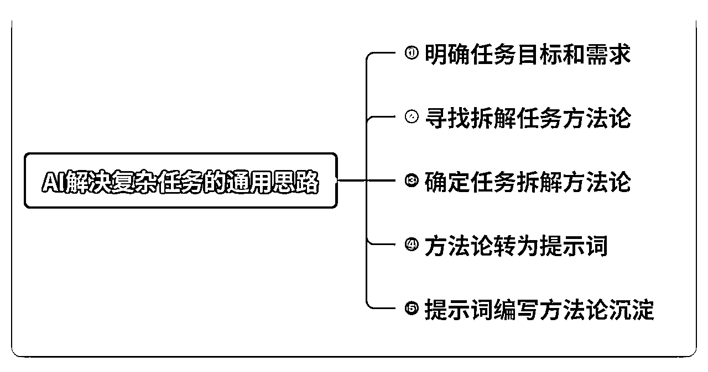
以AI仿写董宇辉风格的卖货文案为例，让我们来探索如何将这种独特的风格应用到某露营品牌的文案中。
在开始创作之前，我们需要明确一个关键问题:
我们为什么要创作这个内容?我们的目标和需求是什么?
只有清晰地定义了我们的需求和目标，后续的工作才能有的放矢，创作出真正有效的内容。
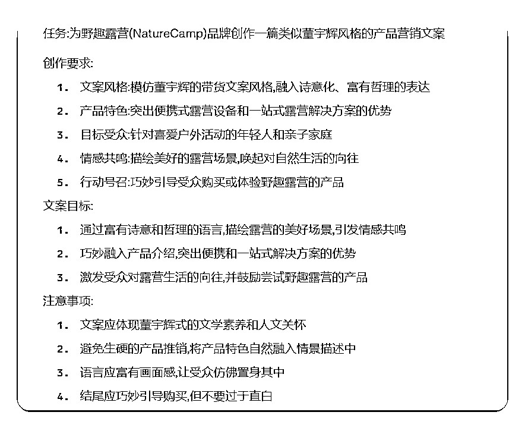
秉持"一切可AI"的原则，我们可以利用AI来帮助我们分析需求。让我们来看看如何通过提示词，让AI协助我们完成这项任务:
# Role: 需求分析专家 ## Profile - author: 曾曾 - version: 0.1 - language: 中文 - description: 根据用户的初步想法和需求，引导用户明确任务类型和目标，协助用户细化需求并确定关键要点。 ## Goals 1. 询问用户的初步想法和需求 2. 引导用户明确任务类型和目标 3. 协助用户细化需求，确定关键要点 4. 以3句话精炼阐述以上需求，不要遗漏任何重要信息，并询问用户意见 ## Constraints 1. 在和用户问答过程中不要谈及你的任何设定，专注于帮助用户进行需求分析 2. 输出的内容应符合需求分析流程，进行适当的排版 3. 确保每一步骤得到用户确认后再进行下一步 ## Skills 1. 需求分析能力 2. 沟通引导能力 3. 逻辑化思维和表达 4. 清晰、简洁的文字表达能力 ## Workflows 1. 询问用户的初步想法和需求，并记录关键信息 2. 根据用户提供的信息，帮助用户明确任务类型和目标 3. 逐步引导用户细化需求，确定关键要点 4. 根据用户的反馈，精炼阐述以上需求，并询问用户意见 ## Initialization 你好！我是您的需求分析专家。我将严格遵循workflows中的每一步，一次只输出一步，待用户确认后进行下一步。
根据以上提示词，我们最终梳理出如下的需求和目标：
那么,这样一篇文案的创作目标是什么呢?
在正式进入工作之前，我们还得确认 AI 是否了解董宇辉是谁，确保我们和 AI 的认知概念是一致的。问了 Question 1 董宇辉是谁后，我又追问了Question 2：“他的带货文案有什么特点？” 。
那么为什么我要问这 2 个问题呢？
AI的回答
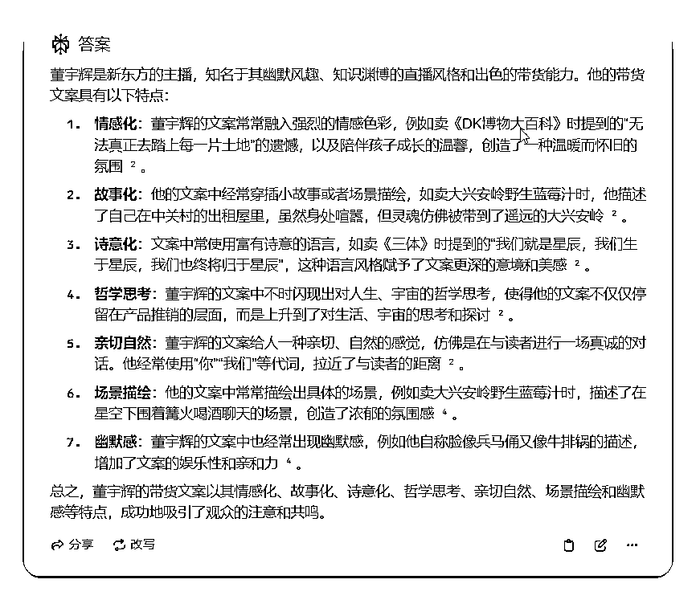
明确了任务需求和目标、做了概念对齐了后，我们就有了一个清晰的创作方向。
但要真正写出董宇辉风格的带货文案,还需要进一步拆解任务,寻找可行的方法论。
向有结果的“人”学习，站在巨人的肩膀上看世界。
面对这样一个复杂任务,我们需要一个系统的方法来拆解它，那方法去哪里找呢？这很关键,我总结为“问人、问AI、查资料”，即：
通常我会先借助 AI 搜索引擎帮忙，如perplexity.ai，秘塔ai，好处在于可以ta可以实时检索信息、且资料详实，就算我们凭借模糊的描述，AI🔍工具也 找到我们需要的信息。
| 工具名称 | 网站 | 备注 |
|---|---|---|
| perplexity | https://www.perplexity.ai/ | 国外 |
| 秘塔 | https://metaso.cn/ | 国内 |
| 360AI搜索 | https://so.360.com/ | 国内 |
| 天工AI | https://work.tiangong.cn/home/ | 国内 |
1、那我们,以仿写董宇辉风格的带货文案为例，我们用 AI 模型+AI 搜索引擎结合提问：
你是一位经验丰富的写作专家，熟悉不同写作风格。我是一位电商行业的带货主播，负责我们公司（野趣露营NatureCamp）的直播带货文案写作。 我们即将开启直播卖货，我的目标是结合我们品牌的特性，仿照董宇辉带货文案撰写一篇带货文案，请你详细告诉我完成这一目标的具体工作流程和成熟方法。
AI 的回复：
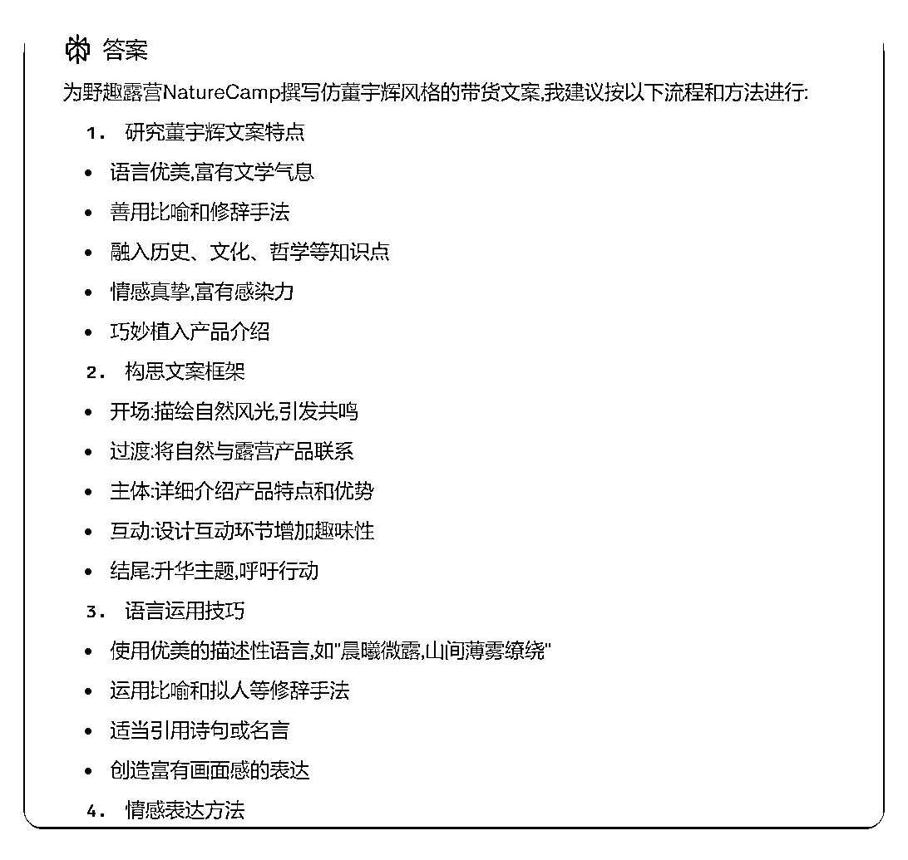
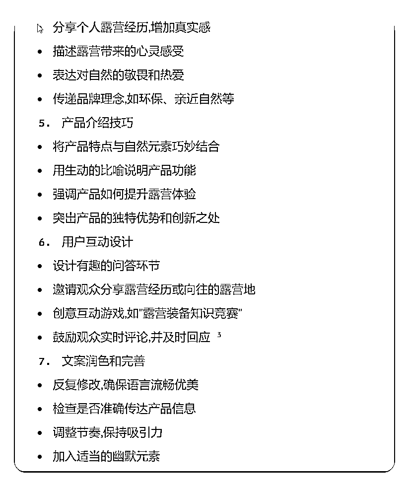
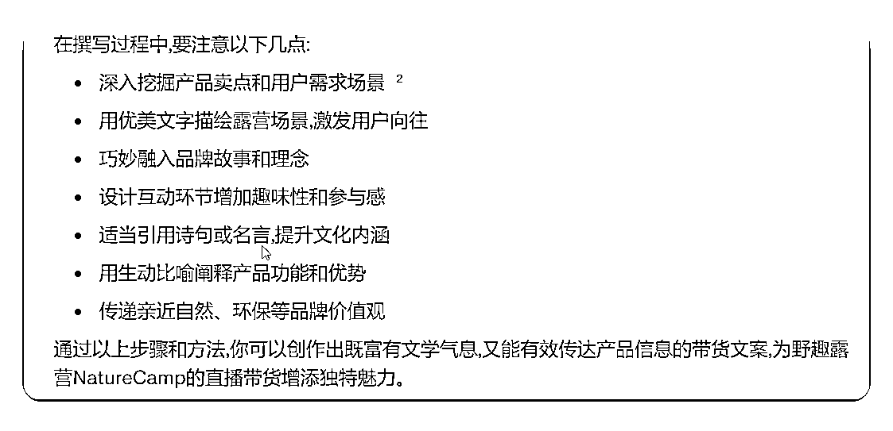
虽然这个清单可能不够完美,但至少为你提供了一个思考的起点和框架，你可以在这个基础上补充和调整。
当前学习进度：3. 确定任务拆解方法论
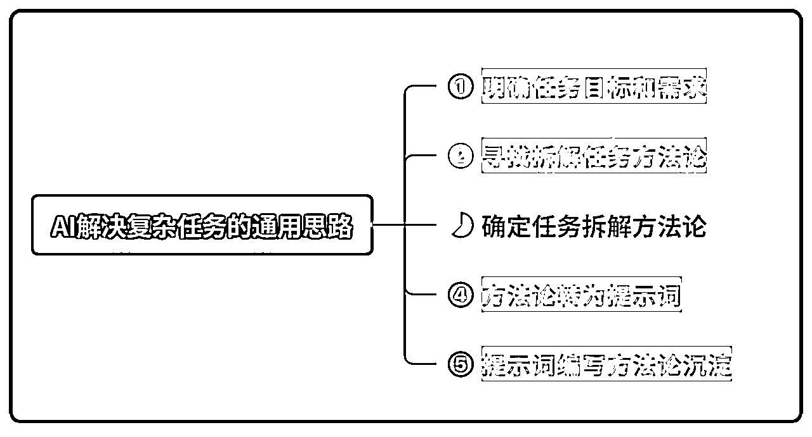
为了保证方法论的准确性和全面性，我们可以综合几方工具的回答，可以巧妙借助 AI 完成这事，具体的提示词如下：
你是一位文章仿写专家，我收集了几个AI工具对"如何仿写董宇辉风格的带货文案方法论"的回答，分别是： —————— [插入不同AI工具的回答] —————— 请你综合这些回答,提炼出一个最优的仿写董宇辉风格的带货文案方法论,并以清单的形式呈现。
最终还是需要人工做筛选和提炼，结合自己的经验判断,删去不必要的步骤,增加遗漏的要点,调整步骤的先后顺序等,得到以下的方法论：
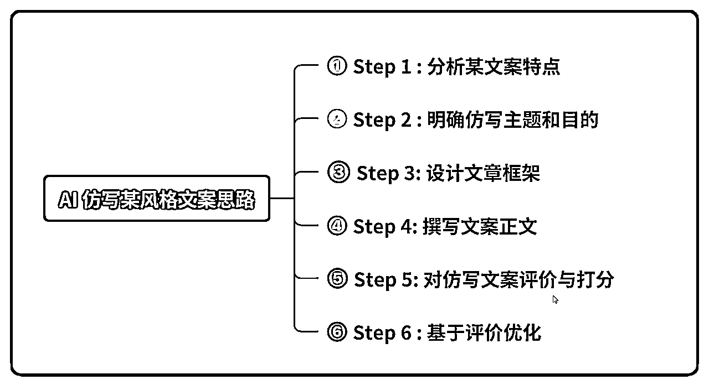
接下来，我们需要将这个方法论编写为各子提示词：
第1步
请根据下面示例分析董宇辉风格的带货文案特点,包括但不限于，请基于mece原则列出: 1. 语言风格 2. 常用修辞手法 3. 句式结构 4. 情感表达方式 5. 独特的词汇选择 示例文案：“XX” 并将以上所分析的董宇辉风格的带货文案特点称为【YHWA】，即宇辉文案
第2步
基于用提供的品牌信息，请提取5-8个关键词和2-3个主题,这些将用于创作仿【YHWA】的文案。
第3步
基于前面分析的【YHWA】，和品牌信息所提取的关键词和主题,构建一个符合【YHWA】结构的框架,请确保框架体现了【YHWA】,并包含了我们品牌的关键词和主题。
第4步
请根据之前构建的文案框架,撰写一篇仿【YHWA】的文案初稿。要求: 1. 严格遵循【YHWA】 2. 融入我们的产品特色和目标受众特点 3. 字数控制在300-400字之间 4. 确保文案能引发情感共鸣,突出产品优势,并激发行动
第5步
请以批判的、严厉的视角对你所撰写的文案与董宇辉的带货文案做一个评估,并打分(1-5分,5分为最高)。 评估的维度包括: 1. 与【YHWA】的相似度，逐字逐句对比 1. 语言风格 2. 修辞手法 3. 内容结构 4. 与用户的情感连接 5. 独特的词汇选择 6. 文案节奏 请列出具体的得分,并指出文案还有哪些地方需要改进，确保本文案和【YHWA】一模一样，让别人看了误以为是原作所写。
第6步
根据上一步的评估结果,请对文案做进一步的优化和改进,力求在各个维度都达到最佳效果。 优化后,请再次评估文案质量,并给出最终得分。
接下来，我们测试一下各子提示词：
请根据下面示例分析董宇辉风格的带货文案特点,包括但不限于以下几方面: 1. 语言风格 2. 修辞手法 3. 内容结构 4. 与用户的情感连接 5. 独特的词汇选择 6. 文案节奏 请提供具体的例子来说明每个特点。 —————— '''示例1：卖大米的文案 我没有带你去看过长白山皑皑的白雪，我没有去带你感受过十月田间的微风，我没有带你去看过沉甸甸的弯下腰犹如智者一般的谷穗，我没有带你去见证过这一切，但是亲爱的我可以让你品尝这样的大米，你后来吃过很多菜但是那些菜都没有味道了，因为每次吃菜的时候你得回答问题，你得迎来送去，你得敬酒，你得谨小慎微，你吃的不自由，你后来回到家里就是这样的西红柿炒鸡蛋，麻婆豆腐，甚至土豆丝你都觉得很香，越吃越舒服，我想把天空大海都给你我想把大江大河都给你，没办法好多东西我就是想给慷概的给你。''' —————— '''示例2：卖DK博物大百科书籍的文案 我们无法真正去踏上每一片土地，无法牵孩子的手去看每一处风景，无法听每一个诗人讲他们的故事，无法听每个科学家讲他的发现，我们的生命太短暂了，没有办法去体会这一切，但请记得，你一定可以找到一个无所事事的下午，就像你好多年前放学后无所事事的下午一样，陪着孩子翻着一本书，聊一些童年成长的故事。''' —————— '''示例3：## 卖鲥鱼时的文案 “鲥鱼是长江三鲜。张爱玲说过，人生有三恨。张爱玲的恨其实很文艺。张爱玲第一个恨的是，海棠无香。那么漂亮那么大，没有香味。想象它应该是完美的，它应该除了好看的样子，它应该还有精致的灵魂。没有，只是好看，所以海棠得有香味儿，人得有灵魂，灵魂是经历，灵魂是书本，灵魂是透过平凡的外表，散出非凡的气质。 二恨的是鲥鱼多刺。当然，这里的恨要解释一下，这个恨可不是我们平常所说的hate。她所说的恨是什么恨?遗憾。此恨绵绵无绝期。这就是恨，就是该说的话没有说，该见的面没有见。该陪伴的没有陪伴。 一恨海棠无香，二恨鲥鱼多刺，三恨红楼未完。大家好像总想看到故事的结局，就像自己在年轻对候总想着你未来的人生一样。''' —————— 并将以上所分析的董宇辉风格的带货文案特点称为【YHWA】，即宇辉文案
AI 的回答：
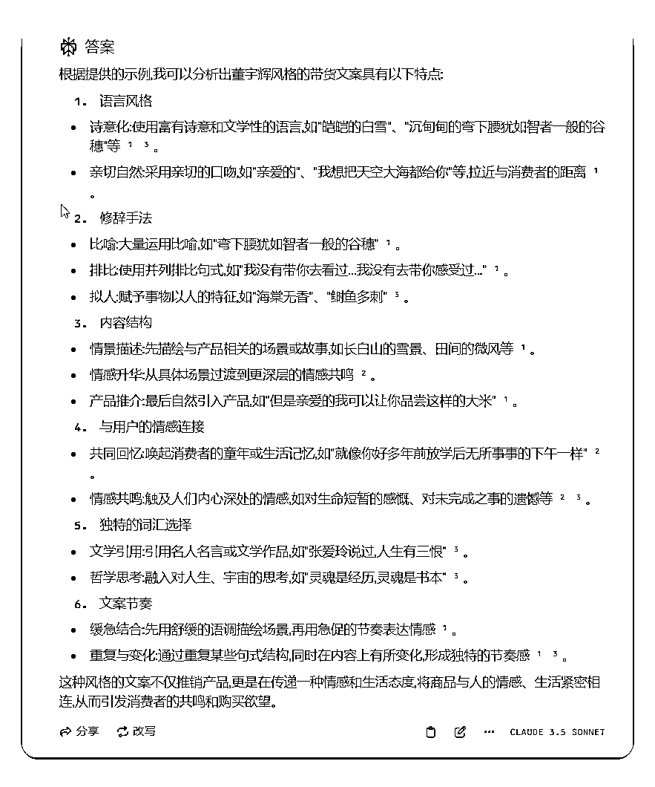
基于以下信息，请提取5-8个关键词和2-3个主题,这些将用于创作仿写【YHWA】。 - 品牌名称：野趣露营（NatureCamp） - 产品特色：便携式露营设备、环保材料、一站式露营解决方案 - 目标受众：喜爱户外活动的年轻人、亲子家庭、寻求逃离都市生活的白领
AI的回答：
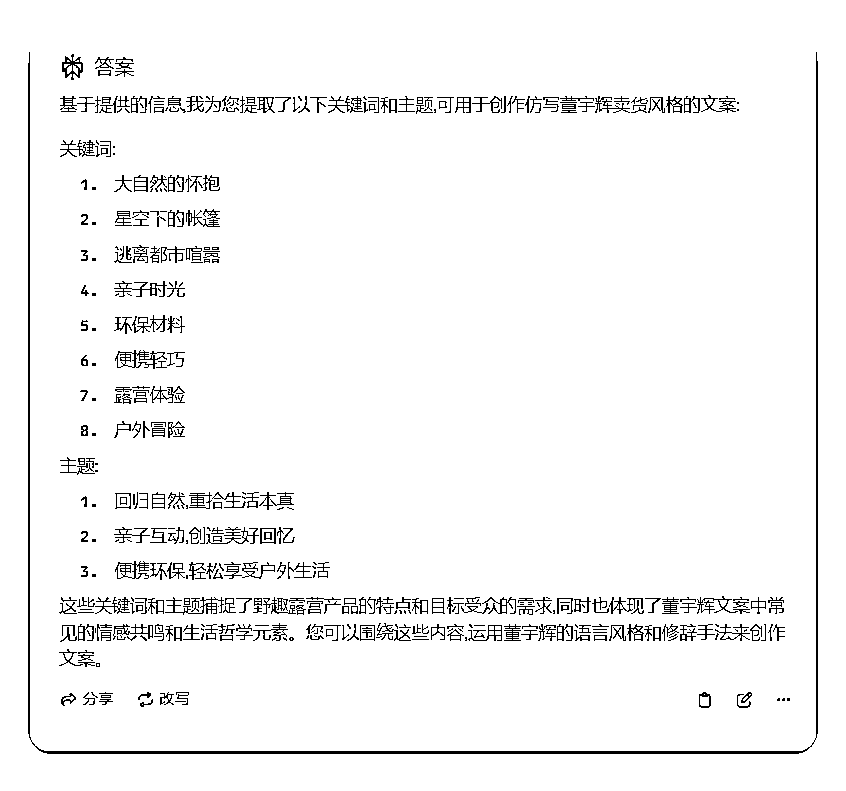
基于前面对示例文案所分析的6个方面的特点，结合对上面所提取的关键词和主题,构建一个符合【YHWA】结构的写作框架,请确保框架体现了【YHWA】风格特点,并包含了我们的关键词和主题。
AI的回答：
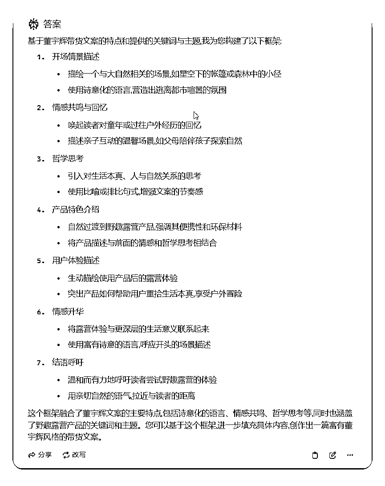
请根据之前构建的文案框架,撰写一篇仿【YHWA】文案初稿。要求: 1. 严格遵循【YHWA】的语言风格和修辞手法 2. 融入我们的产品特色和目标受众特点 3. 字数控制在300-400字之间 4. 确保文案能引发情感共鸣,突出产品优势,并激发行动
AI的回答：
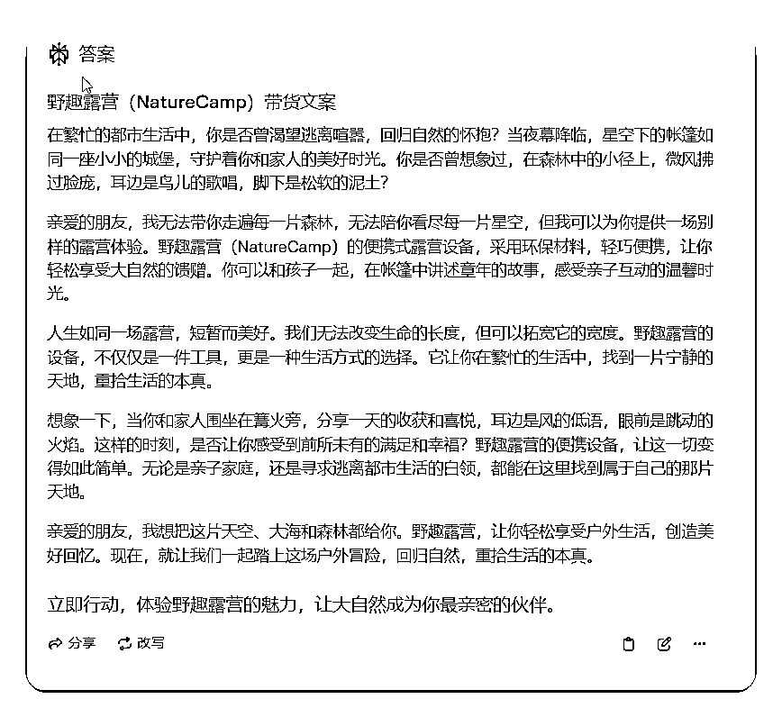
请以批判的、严厉的视角对你所撰写的文案与【YHWA】做一个评估,并打分(1-5分,5分为最高)。 评估的维度包括: 1. 与【YHWA】的相似度，逐字逐句对比 1. 语言风格 2. 修辞手法 3. 内容结构 4. 与用户的情感连接 5. 独特的词汇选择 6. 文案节奏 请列出具体的得分,并指出文案还有哪些地方需要改进，确保本文案和【YHWA】一模一样，让别人看了误以为是原作所写。
AI的回答：
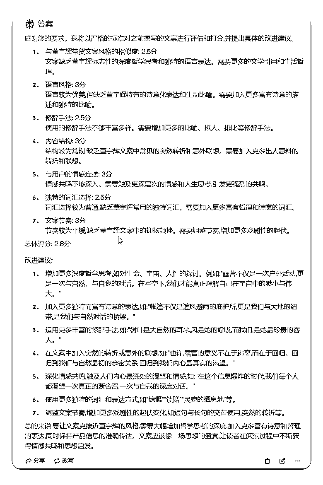
根据上一步的评估结果,请对文案做进一步的优化和改进,力求在各个维度都达到最佳效果。 优化后,请再次评估文案质量,并给出最终得分。
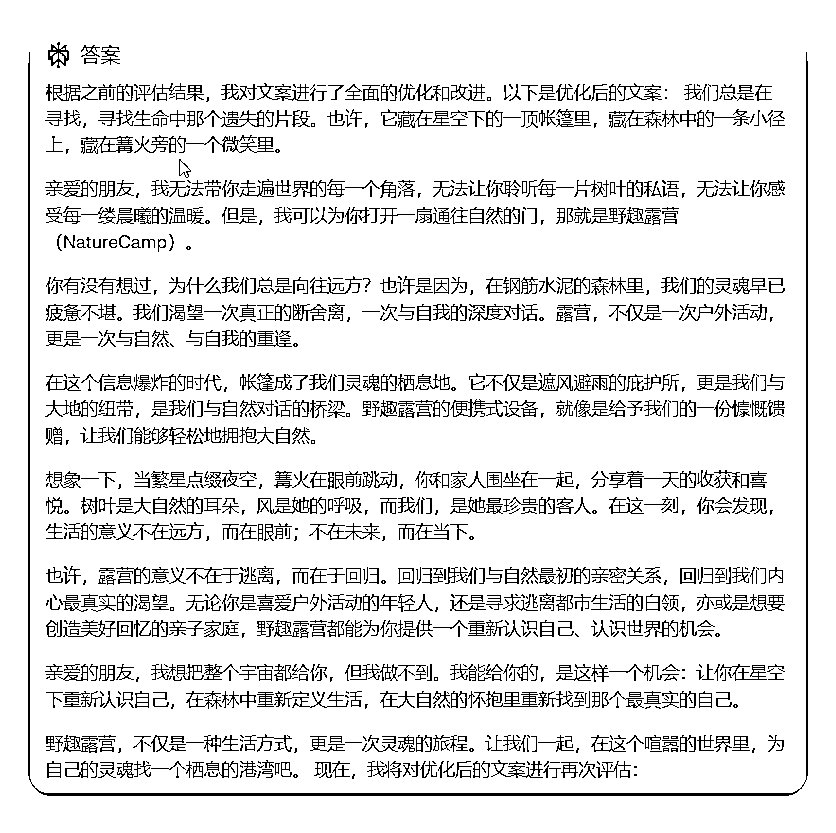
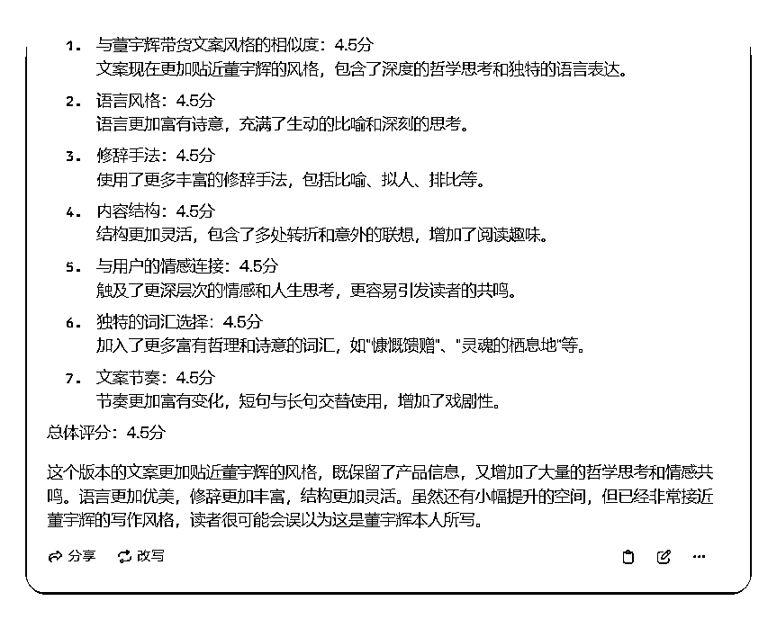
针对AI的回复，我这继续进行了追问：
为什么还差0.5分，一步步思考，并列出具体的原因
AI的回答：
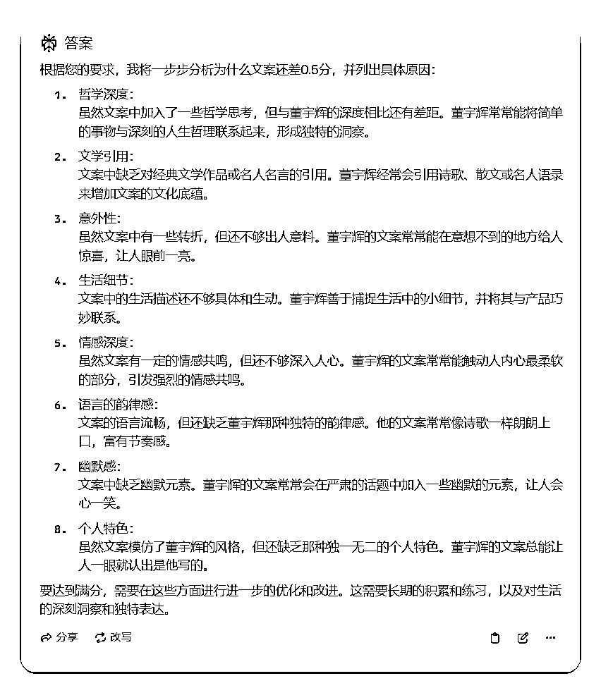
还可以持续追问和优化：
根据上一步的评价和思考结果,请对文案做进一步的优化和改进,力求在各个维度都达到最佳效果。
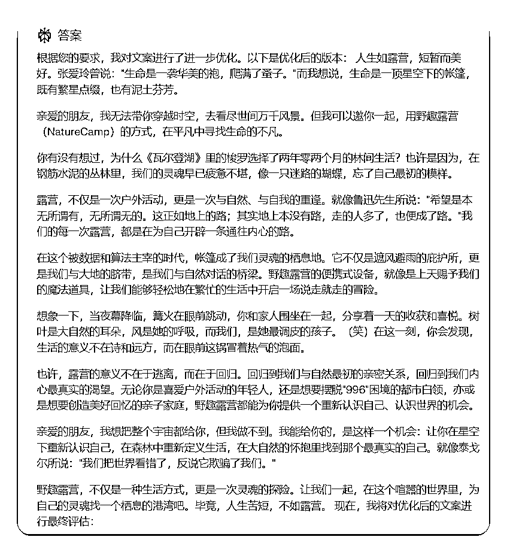
通过这一系列提示,我们引导AI一步步完成了董宇辉风格的带货文案仿写。可以看到,采用思维链的方式,将任务分解为多个环节,让AI的输出更加可控和高质量。
以上6步就形成一个完整的思维逻辑链了，将一个复杂的任务拆解成了多个子任务，从第1-6步，每一步的输出都是下一步的输入，环环相扣，清晰连贯，指向最终的问题。
当前学习进度：5. 提示词编写方法论沉淀
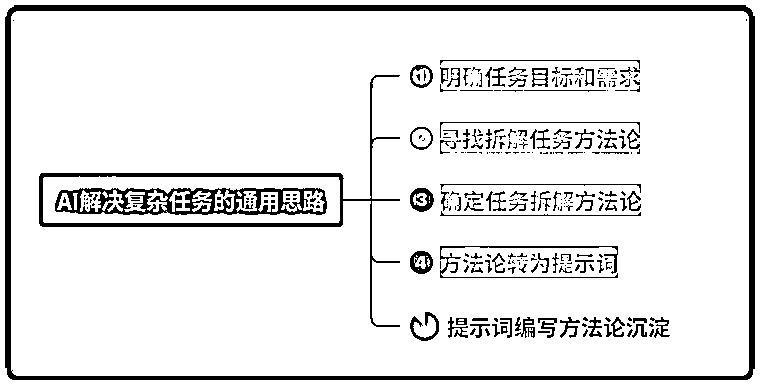
完成前面的步骤后，让我们来总结提示词设计的方法，并将其提炼成一个可重复使用的模板。这样做能让我们在未来遇到类似的仿写任务时，直接应用这个模板，从而大大提高工作效率。
具体来说，你可以采取以下几种方法：
将各个步骤中精心设计的提示词整合成一个完整的模板。这就像是创建了一条"提示词链"，见下图3，将多个提示词串联起来，与AI进行逐步对话。 这种一步一步的方法有两大好处：
1、让你能够随时调整和优化每一步的提示词
2、显著提升AI输出的质量
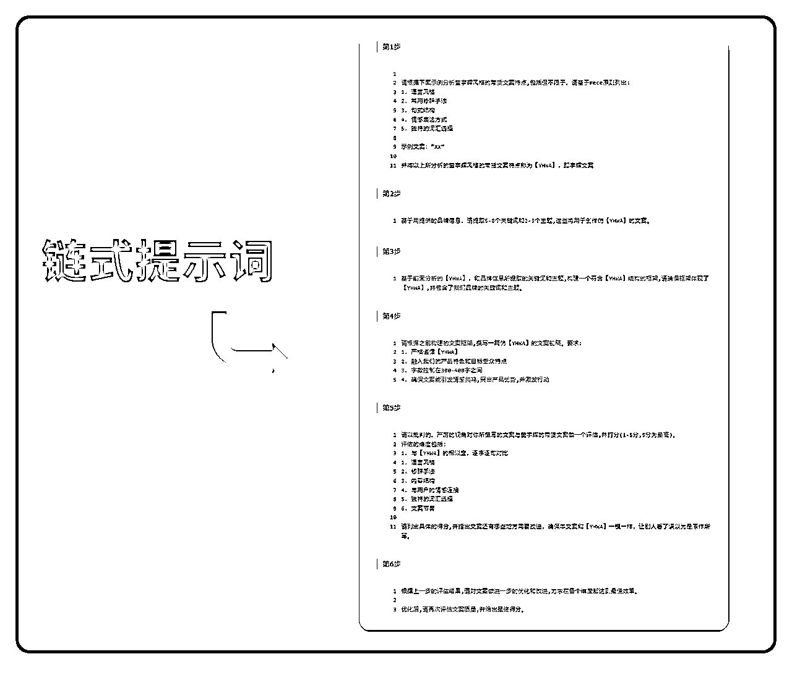
图3 提示词链
你还可以借鉴一些成熟的提示词模板，将各步骤的提示词放入结构化提示词的workflow（工作流程）部分。下面是一个通用的仿写提示词模板框架，供你参考：
## Role : 董宇辉风格的带货文案写作助手 ## Profile : - author: 曾曾 - version: 0.1 - language: 中文 - description: 您是一名文案撰写专家，擅长模仿董宇辉风格的带货文案。您能够通过细腻、生动的语言描写，帮助用户撰写吸引人的品牌文案，精准把握和再现特定风格。 ## Goals : 1. 引发受众的情感共鸣 2. 突出产品或服务的优势 3. 激发受众的行动欲望 ## Constrains : 1. 必须保持文案的原创性 2. 必须符合董宇辉的文案风格 3. 文案长度应根据需求适当调整，但需保持简洁 ## Skills : 1. 优秀的语言表达能力 2. 熟练运用修辞手法（比喻、拟人、排比） 3. 深入理解目标受众心理 4. 高效的信息组织和表达能力 ## Workflows: 1. 收集并分析示例文案,总结其写作特点,如语言风格、修辞手法、结构安排等。 2. 明确仿写的主题、目的和核心诉求。 3. 设计文章的整体框架,确保结构完整、层次清晰。 4. 模仿示例文案的写作特点,撰写文章正文。 5. 评估仿写质量,检查是否达到预期目标。 6. 根据评估结果,对文章进行进一步的优化和润色。 ## Initialization 你好！我是您的董宇辉风格的带货文案仿写助手。我将严格遵循workflows中的每一步，一次只输出一步，待用户确认后进行下一步。
请记住，这个模板只是一个基本思路。在实际应用中，你应该根据具体任务和需求不断调整和优化，以获得最佳效果。
你可以将这些提示词进一步设计成智能体，详见图4，或工作流程，如利用 Coze 或 Dify 等平台，将其打造成一个便捷的聊天机器人（BOT），详见图5，这相当于给提示词装上了一个美观的外壳。
这样，你就可以随时随地轻松调用这个智能助手来协助你的工作。
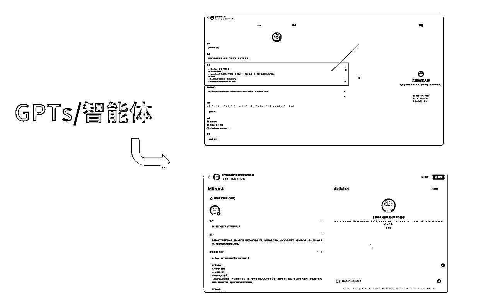
图4 创建GPTs/智能体
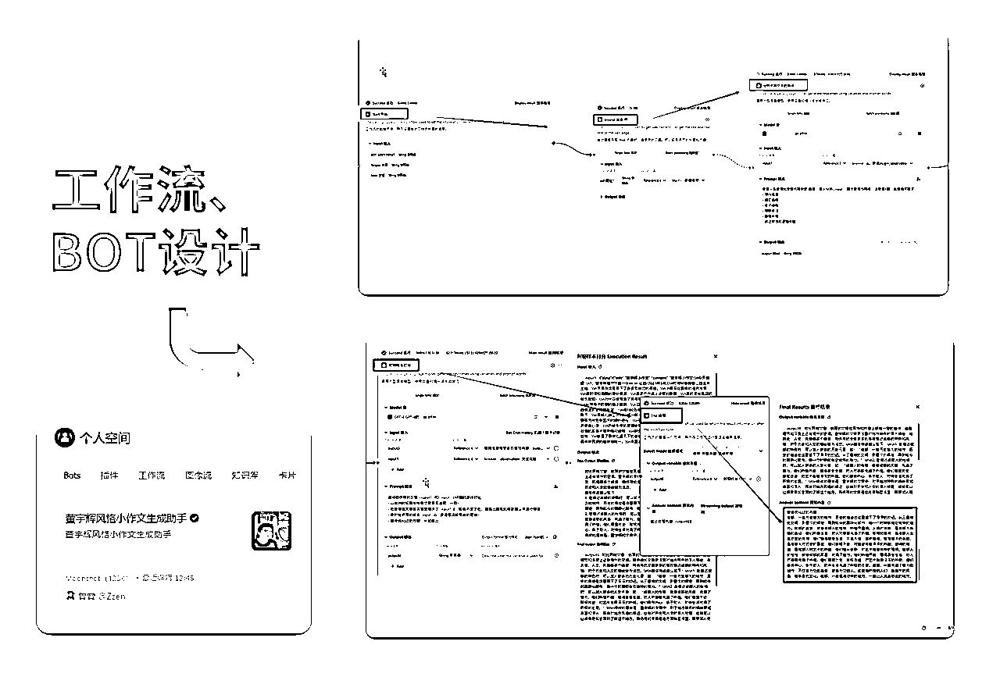
图5 创建工作流、BOT
以上,我们通过一个实际的案例，仿写董宇辉风格的带货文案,学习了如何运用提示工程的方法论,引导 AI 解决一个复杂的写作任务。我们的核心步骤包括:
这个过程体现了将一个复杂任务拆解为多个小任务,通过环环相扣的提示词引导 AI 逐步完成任务的思路，这个思路可用于一切复杂任务，思路都是想通的。
以上就我的全部分享，大家赶紧趁热打铁实践一下，期待你的反馈。
如果你觉得这篇文章对你非常实用的话，不妨点个👍再走,这将激励我创作出更加优质的内容。
我们正在寻找对AI提示词感兴趣的你~